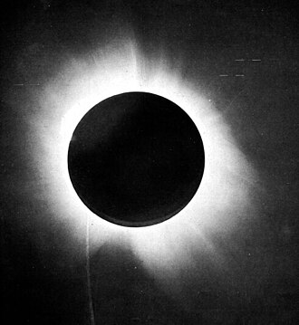

Teoria Gravitației
Einstein a revoluționat înțelegerea gravitației prin teoria relativității generalizate, demonstrând că gravitația nu este o forță tradițională, ci o manifestare a curburii spațiu-timpului.
Una din consecințele teoriei relativității generalizate o constituie "Curbarea spațiului".
Sesizând asemănarea dintre curbarea traiectoriei unui obiect aflat într-un sistem de referință care se mișcă uniform accelerat și curbarea traiectoriei unui obiect lansat în câmpul gravitațional, Einstein trage concluzia că fasciculele luminoase se curbează când se propagă în vecinătatea unui corp ceresc cu masă foarte mare, de unde reprezentarea mai greu de înțeles, cum că spațiul însuși ar fi curb. Pentru a-și susține teoria relativității generalizate, Einstein a atras atenția că există fenomene care o confirmă. Astfel, el a afirmat că frecvența undelor luminoase se modifică atunci când acestea parcurg un câmp gravitațional, pentru că orbitele planetelor și sateliților suferă o rotire suplimentară și că razele de lumină sunt deviate de la linia dreaptă în vecinătatea Soarelui.